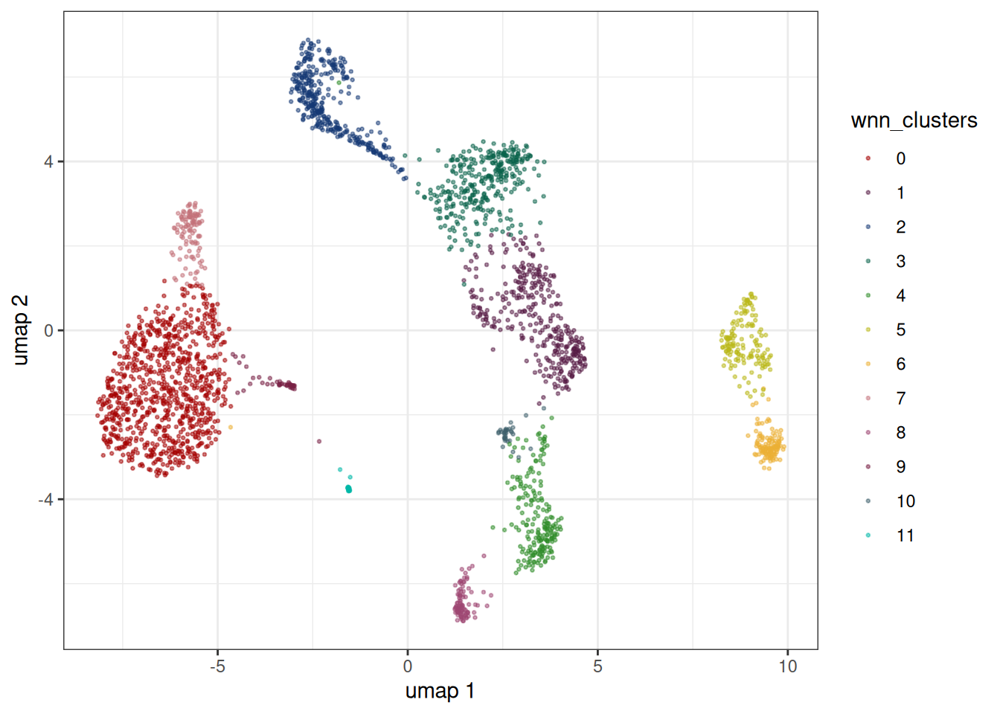

library(bixverse)
library(bixverse.plots)
library(patchwork)
library(ggplot2)
library(data.table)
#>
#> Attaching package: 'data.table'
#> The following object is masked from 'package:base':
#>
#> %notin%Joint RNA and ATAC analysis with bixverse
2026-11-28
Intro
10x multiome measures gene expression and chromatin accessibility in the same nuclei. This vignette takes the unsorted 3k PBMC data set (Cell Ranger ARC 2.0.0) from the raw files to linked peaks and genes: fragment QC and multiplet calls, peaks called per cluster, TF-IDF and LSI, the weighted nearest neighbour graph over both modalities, gene activity and label transfer, differential accessibility and peak to gene links.
ATAC lives next to the RNA in a SingleCellsMultiModal: a second store under atac/ with peaks as features, log-CPM as the norm until run_tfidf_sc() switches it to TF-IDF. Its cells are the RNA cells, in the same order, so the RNA cell filter applies to both. Read the multi-modal vignette first if you have not. ATAC without RNA has its own vignette.
The numerics are ports, checked against the originals on test data: Signac for the counting, QC, TF-IDF, LSI and gene activity, MACS3 for the peak calling, AMULET for the multiplets and Seurat for the label transfer. Motif analysis (chromVAR) and coverage tracks are not in bixverse yet.
The data
download_pbmc_multiome() fetches the filtered feature barcode matrix (RNA and Cell Ranger’s peak counts in one h5), the fragment file with its tabix index, Cell Ranger’s peaks, the GENCODE v32 annotation Cell Ranger ARC’s GRCh38 reference was built from, and the ENCODE hg38 blacklist.
data_dir <- download_pbmc_multiome()
h5_path <- file.path(data_dir, "pbmc_unsorted_3k_filtered_feature_bc_matrix.h5")
fragments <- file.path(data_dir, "pbmc_unsorted_3k_atac_fragments.tsv.gz")
gtf <- file.path(data_dir, "gencode.v32.primary_assembly.annotation.gtf.gz")
blacklist <- file.path(data_dir, "hg38-blacklist.v2.bed.gz")
exp_dir <- file.path(tempdir(), "pbmc_multiome")
dir.create(exp_dir, showWarnings = FALSE)Loading
The RNA comes from the Gene Expression rows of the h5, the ATAC from its Peaks rows. add_atac_tenx_sc() writes the peak store for every cell of the RNA store, in its order; it counts Tn5 insertions, as Cell Ranger does.
sc_object <- SingleCellsMultiModal(dir_data = exp_dir)
sc_object <- load_tenx_h5(sc_object, h5_path = h5_path, .verbose = FALSE)
sc_object <- add_atac_tenx_sc(sc_object, h5_path = h5_path, .verbose = FALSE)
sc_object
#> Single cell experiment (Multi-modal).
#> No cells (original): 2956
#> To keep n: 2956
#> RNA:
#> No genes: 16556
#> HVG calculated: FALSE
#> PCA calculated: FALSE
#> Other embeddings: none
#> KNN generated: FALSE
#> Graph generated: FALSE
#> ADT:
#> Present: FALSE
#> No features: 0
#> PCA calculated: FALSE
#> Other embeddings: none
#> KNN generated: FALSE
#> Graph generated: FALSE
#> ATAC:
#> Present: TRUE
#> Kind: peak (insertion counts)
#> TF-IDF: FALSE
#> Other embeddings: none
#> KNN generated: FALSE
#> Graph generated: FALSE
#> Stale artefacts: none
head(get_sc_var(sc_object, modality = "atac"))
#> feature_idx feature_id chrom start end
#> <int> <char> <char> <int> <int>
#> 1: 1 chr1:9782-10672 chr1 9782 10672
#> 2: 2 chr1:180547-181446 chr1 180547 181446
#> 3: 3 chr1:191121-191998 chr1 191121 191998
#> 4: 4 chr1:267553-268447 chr1 267553 268447
#> 5: 5 chr1:270906-271782 chr1 270906 271782
#> 6: 6 chr1:273943-274789 chr1 273943 274789Quality control
Per cell from the fragment file: fragments, nucleosome signal (mono- over nucleosome-free fragments), TSS enrichment, the fraction on chrM and the fraction of insertions in peaks. Cell Ranger ARC leaves chrM out of the fragment file, so the ATAC mito fraction is zero throughout here; the RNA side has its own.
sc_object <- fragment_qc_sc(sc_object, fragments = fragments, gtf = gtf)
var <- get_sc_var(sc_object)
mito <- var[grepl("^MT-", gene_name), gene_id]
sc_object <- gene_set_proportions_sc(
sc_object,
gene_set_list = list(MT = mito),
.verbose = FALSE
)The two library-level checks first: insertions pile up at TSSs, and fragment lengths come in nucleosome steps. A flat TSS profile or a smooth length distribution means a failed library, whatever the per-cell numbers say.
profiles <- fragment_profiles_sc(sc_object, fragments = fragments, gtf = gtf)
tss_profile_plot_sc(profiles$tss) + fragment_length_plot_sc(profiles$lengths)
obs <- sc_object[[c(
"cell_id",
"lib_size",
"nnz",
"MT",
"atac_n_fragments",
"atac_lib_size",
"atac_nucleosome_signal",
"atac_tss_enrichment",
"atac_frip"
)]]
ggplot(obs, aes(x = atac_n_fragments, y = atac_tss_enrichment)) +
geom_point(size = 0.5, alpha = 0.5) +
scale_x_log10() +
labs(x = "Fragments per cell", y = "TSS enrichment") +
theme_bx()
Multiplets
Nuclei carry two copies of each chromosome, so a locus covered by more than two of a cell’s fragments points at a second nucleus. AMULET counts those loci per cell and tests them against a Poisson background, without clustering or RNA. Regions that pile up fragments in every cell, the blacklist, are left out; a repeat list would clean the calls further.
Thresholds
On the ATAC side we keep cells with 1,000 to 100,000 insertions in peaks, a nucleosome signal under 2 and a TSS enrichment over 2, cut-offs that sit in the tails of the distributions above. On the RNA side we flag MAD outliers on library size and genes, and cells above 3 MADs of mitochondrial share.
atac_qc <- run_cell_qc_fixed(
metrics = list(
atac_lib_size = obs$atac_lib_size,
atac_nucleosome_signal = obs$atac_nucleosome_signal,
atac_tss_enrichment = obs$atac_tss_enrichment
),
cells_to_keep = get_cells_to_keep(sc_object),
hard_thresholds = list(
atac_lib_size = c(lower = 1000, upper = 100000),
atac_nucleosome_signal = c(upper = 2),
atac_tss_enrichment = c(lower = 2)
)
)
plots <- violin_plot_sc(atac_qc)
plots$atac_lib_size + plots$atac_nucleosome_signal + plots$atac_tss_enrichment
rna_qc <- run_cell_qc(
metrics = list(
log10_lib_size = log10(obs$lib_size),
log10_nnz = log10(obs$nnz),
MT = obs$MT
),
cells_to_keep = get_cells_to_keep(sc_object),
directions = c(
log10_lib_size = "twosided",
log10_nnz = "twosided",
MT = "above"
),
threshold = 3
)
plots <- violin_plot_sc(rna_qc)
plots$log10_lib_size + plots$log10_nnz + plots$MT
drop <- atac_qc$combined | rna_qc$combined | multiplet
sprintf(
"ATAC fails %i, RNA fails %i, multiplets %i, dropped %i of %i",
sum(atac_qc$combined),
sum(rna_qc$combined),
sum(multiplet),
sum(drop),
length(drop)
)
#> [1] "ATAC fails 121, RNA fails 89, multiplets 113, dropped 295 of 2956"
sc_object <- set_cells_to_keep(sc_object, obs$cell_id[!drop])RNA
Highly variable genes, PCA, kNN, Leiden. These clusters are what the peaks get called on below.
sc_object <- find_hvg_sc(sc_object, hvg_no = 2000L, .verbose = FALSE)
sc_object <- calculate_pca_sc(sc_object, no_pcs = 50L, .verbose = FALSE)
sc_object <- find_neighbours_sc(
sc_object,
no_embd_to_use = 30L,
.verbose = FALSE
)
sc_object <- find_clusters_sc(sc_object, res = 0.8, .verbose = FALSE)
sc_object <- umap_sc(sc_object, no_embd_to_use = 30L, .verbose = FALSE)
embedding_plot_sc(
sc_object,
embedding = "umap",
colour_by = "leiden_clustering",
discrete = TRUE,
point_size = 0.5
)
Peaks
Cell Ranger calls peaks on all cells pooled, which under-calls rare populations. We call them per RNA cluster with bixverse’s port of MACS3 callpeak (--nomodel --extsize 200 --shift -100 on the Tn5 insertions), merge the clusters’ peaks, drop those on blacklist regions and on contigs, and recount the fragments against the merged set. The new store replaces the Cell Ranger one.
cr_peaks <- nrow(get_sc_var(sc_object, modality = "atac"))
peaks <- call_peaks_sc(
sc_object,
fragments = fragments,
group_by = "leiden_clustering"
)
peaks <- peaks[grepl("^chr[0-9XY]+$", chrom)]
peaks <- remove_blacklisted(peaks, blacklist)
sprintf(
"Cell Ranger peaks: %i, merged per-cluster peaks: %i",
cr_peaks,
nrow(peaks)
)
#> [1] "Cell Ranger peaks: 81156, merged per-cluster peaks: 123282"
sc_object <- add_atac_fragments_sc(
sc_object,
fragments = fragments,
peaks = peaks,
overwrite = TRUE,
.verbose = FALSE
)
sc_object <- annotate_peaks_sc(sc_object, gtf = gtf)
head(get_sc_var(sc_object, modality = "atac"))
#> feature_idx feature_id chrom start end closest_gene
#> <int> <char> <char> <int> <int> <char>
#> 1: 1 chr1:817010-817534 chr1 817010 817534 SAMD11
#> 2: 2 chr1:821087-821409 chr1 821087 821409 SAMD11
#> 3: 3 chr1:827161-827846 chr1 827161 827846 SAMD11
#> 4: 4 chr1:844286-844951 chr1 844286 844951 SAMD11
#> 5: 5 chr1:858000-858258 chr1 858000 858258 SAMD11
#> 6: 6 chr1:858458-858674 chr1 858458 858674 SAMD11
#> closest_gene_id distance_to_gene distance_to_tss
#> <char> <num> <num>
#> 1: ENSG00000187634.12 106393 -106655
#> 2: ENSG00000187634.12 102518 -102679
#> 3: ENSG00000187634.12 96081 -96424
#> 4: ENSG00000187634.12 78976 -79309
#> 5: ENSG00000187634.12 65669 -65798
#> 6: ENSG00000187634.12 65253 -65361TF-IDF and LSI
TF-IDF over the kept cells, then a truncated SVD of the TF-IDF. We keep peaks above the 25th percentile of total counts: the bottom quarter is mostly noise at this depth. The first LSI component of ATAC data usually tracks sequencing depth rather than cell identity; calculate_lsi_sc() leaves it out of the embedding by default, and the depth plot shows whether that is right here (hollow points are the components left out).
sc_object <- run_tfidf_sc(sc_object)
sc_object <- find_top_features_sc(sc_object, min_cutoff = "q25")
var_atac <- get_sc_var(sc_object, modality = "atac")
sprintf(
"%i of %i peaks kept for the LSI",
sum(var_atac$top_feature),
nrow(var_atac)
)
#> [1] "92510 of 123282 peaks kept for the LSI"
sc_object <- calculate_lsi_sc(sc_object, .verbose = FALSE)
lsi_depth_plot_sc(get_lsi_depth_cor(sc_object))
sc_object <- find_neighbours_sc(
sc_object,
embd_to_use = "lsi",
no_embd_to_use = 30L,
modality = "atac",
.verbose = FALSE
)
sc_object <- umap_sc(
sc_object,
embd_to_use = "lsi",
modality = "atac",
.verbose = FALSE
)
embedding_plot_sc(
sc_object,
embedding = "umap",
embd_modality = "atac",
colour_by = "leiden_clustering",
discrete = TRUE,
point_size = 0.5
)The RNA clusters stay together on the ATAC UMAP: the two modalities come from the same nuclei.
Weighted nearest neighbours
WNN fuses the RNA PCA and the ATAC LSI per cell, weighting each by how well it predicts the cell’s neighbourhood.
sc_object <- generate_wnn_graph_sc(
sc_object,
modality_2 = "atac",
embd_to_use_2 = "lsi",
no_embd_to_use_1 = 30L,
no_embd_to_use_2 = 30L,
.verbose = FALSE
)
sc_object <- find_clusters_sc(
sc_object,
modality = "wnn",
name = "wnn_clusters",
res = 0.8,
.verbose = FALSE
)
sc_object <- umap_sc(sc_object, modality = "wnn", .verbose = FALSE)
#> Warning in .manifold_inputs(object = object, use_knn = use_knn, embd_to_use =
#> embd_to_use, : Using the cached kNN graph with 20 neighbours; `k = 15`,
#> `knn_method` and `nn_params` only apply with `use_knn = FALSE`.
embedding_plot_sc(
sc_object,
embedding = "umap",
embd_modality = "wnn",
colour_by = "wnn_clusters",
discrete = TRUE,
point_size = 0.5
)
markers <- c("CD3D", "CD8A", "MS4A1", "CD14", "FCGR3A", "NKG7", "LYZ", "IL7R")
marker_ids <- var[match(markers, gene_name), gene_id]
feature_plot_sc(
sc_object,
features = marker_ids,
feature_labels = setNames(markers, marker_ids),
embedding = "umap",
embd_modality = "wnn",
point_size = 0.5
)
Gene activity and label transfer
Gene activity counts fragments over gene body plus 2 kb upstream into a gene by cell store of its own, the shared feature space for moving labels from an RNA reference onto ATAC cells. With paired data we know the answer: the RNA clusters of the same nuclei. Transfer them through gene activity and the ATAC LSI and count how many come back.
ga <- gene_activity_sc(
sc_object,
fragments = fragments,
gtf = gtf,
.verbose = FALSE
)
transfer <- transfer_labels_seurat_sc(
reference = sc_object,
query = ga,
label_column = "leiden_clustering",
weight_embedding = get_embedding(sc_object, "lsi", modality = "atac"),
.verbose = FALSE
)
truth <- sc_object[["leiden_clustering", filtered = TRUE]][[1]]
sprintf(
"transferred label equals the RNA cluster for %.1f%% of cells",
100 * mean(transfer$predicted_leiden_clustering == as.character(truth))
)
#> [1] "transferred label equals the RNA cluster for 82.5% of cells"Gene activity is a separate SingleCells, so the RNA tools run on it. Methods built on an mRNA count model (residuals, doublet scores) refuse it, and those that gene length biases (AUCell, ScType, NMF) warn.
The same markers as above, as gene activity instead of expression:
feature_plot_sc(
sc_object,
features = marker_ids,
feature_labels = setNames(markers, marker_ids),
embedding = "umap",
embd_modality = "wnn",
expr_sc = ga,
point_size = 0.5
)Differential accessibility
The marker functions take modality = "atac" and test peaks instead of genes, here every WNN cluster against the rest. On ATAC the default test is a logistic regression per peak with the library size as covariate (group ~ peak + depth against group ~ depth), so a cluster with deeper cells does not light up every peak. method = "wilcox" runs the Wilcoxon on the TF-IDF instead.
Don’t read these p-values as inference. Every cell counts as a replicate, so with a few hundred cells per cluster they go astronomically small with either test; use them to rank peaks. The closest gene from annotate_peaks_sc() names them.
da <- find_all_markers_sc(
sc_object,
column_of_interest = "wnn_clusters",
modality = "atac",
.verbose = FALSE
)
annotation <- get_sc_var(
sc_object,
modality = "atac",
cols = c("feature_id", "closest_gene", "distance_to_tss")
)
da <- merge(da, annotation, by = "feature_id", all.x = TRUE)
da[fdr < 0.05, .N, by = grp][order(grp)]
#> grp N
#> <int> <int>
#> 1: 0 10798
#> 2: 1 8904
#> 3: 2 9506
#> 4: 3 9197
#> 5: 4 6720
#> 6: 5 9221
#> 7: 6 7572
#> 8: 7 11127
#> 9: 8 5185
#> 10: 9 6425
#> 11: 10 1340
#> 12: 11 6725
head(da[fdr < 0.05][order(-lfc)], 10)
#> feature_id grp lfc prop1 prop2 z_scores
#> <char> <int> <num> <num> <num> <num>
#> 1: chr17:73561095-73561482 11 1.908164 0.3928571 0.0018989745 9.338511
#> 2: chr7:98642114-98642362 11 1.781399 0.3571429 0.0003797949 9.224580
#> 3: chr3:49711584-49711870 11 1.763607 0.3928571 0.0037979491 8.585456
#> 4: chr10:33715301-33715777 11 1.734024 0.3571429 0.0007595898 9.253073
#> 5: chr7:98641583-98642000 11 1.728459 0.3928571 0.0026585644 8.656052
#> 6: chr20:43711245-43711660 11 1.666939 0.3214286 0.0022787694 8.326826
#> 7: chr12:6188947-6189355 11 1.591882 0.3571429 0.0064565134 8.072657
#> 8: chr10:47441900-47442248 11 1.579680 0.2857143 0.0000000000 8.632262
#> 9: chr8:134683214-134683621 11 1.573452 0.3571429 0.0041777440 7.832864
#> 10: chr14:89773085-89773520 11 1.544000 0.3214286 0.0026585644 8.001845
#> p_values fdr closest_gene distance_to_tss
#> <num> <num> <char> <num>
#> 1: 4.884906e-21 1.732297e-16 SDK2 83156
#> 2: 1.423377e-20 1.732297e-16 NPTX2 24954
#> 3: 4.523840e-18 2.359570e-14 RNF123 22190
#> 4: 1.090649e-20 1.732297e-16 NRP1 -379278
#> 5: 2.441928e-18 1.783144e-14 NPTX2 24507
#> 6: 4.151942e-17 1.684351e-13 MYBL2 44434
#> 7: 3.439242e-16 9.389304e-13 CD9 -10563
#> 8: 3.007519e-18 1.830125e-14 ANXA8 42083
#> 9: 2.384393e-15 4.388435e-12 ZFAT 29631
#> 10: 6.128433e-16 1.398470e-12 EFCAB11 181474A top peak’s accessibility on the WNN UMAP:
top_peak <- da[fdr < 0.05][order(-lfc)]$feature_id[1]
feature_plot_sc(
sc_object,
features = top_peak,
embedding = "umap",
expr_modality = "atac",
embd_modality = "wnn",
point_size = 0.5
)Peak to gene links
A peak whose accessibility rises and falls with a nearby gene’s expression across cell states is a candidate regulatory element for that gene. peak_to_gene_sc() sums both modalities over groups of cells, here fine WNN clusters, correlates every peak within 250 kb of a TSS with the gene, and tests the correlation. Fine clusters rather than the cells themselves: single cells are too sparse for a correlation to mean anything.
sc_object <- find_clusters_sc(
sc_object,
modality = "wnn",
name = "wnn_fine",
res = 5,
.verbose = FALSE
)
links <- peak_to_gene_sc(
sc_object,
gtf = gtf,
group_by = "wnn_fine",
min_cells = 10L,
.verbose = FALSE
)
sprintf(
"%i links at FDR < 0.05 over %i genes",
nrow(links),
uniqueN(links$gene_id)
)
#> [1] "55791 links at FDR < 0.05 over 8522 genes"
head(links[order(-r)], 10)
#> peak_id gene_id gene_name distance r
#> <char> <char> <char> <num> <num>
#> 1: chr6:39440627-39440827 ENSG00000124780 KCNK17 126267 1.0000000
#> 2: chr21:26346784-26346984 ENSG00000166265 CYYR1 -226401 0.9996071
#> 3: chr18:73007257-73007511 ENSG00000166342 NETO1 139239 0.9989419
#> 4: chr11:111364038-111364238 ENSG00000110777 POU2AF1 -91491 0.9985965
#> 5: chr1:107246977-107247304 ENSG00000162631 NTNG1 107134 0.9984105
#> 6: chr3:73503785-73504092 ENSG00000121440 PDZRN3 -121002 0.9983326
#> 7: chr3:31952159-31952545 ENSG00000144645 OSBPL10 -125227 0.9982283
#> 8: chr20:9388312-9388778 ENSG00000125869 LAMP5 -125812 0.9980020
#> 9: chr2:164754286-164754486 ENSG00000169507 SLC38A11 -201138 0.9979827
#> 10: chr20:9457979-9458279 ENSG00000125869 LAMP5 -56228 0.9974990
#> p fdr
#> <num> <num>
#> 1: 0.000000e+00 0.000000e+00
#> 2: 1.184396e-35 3.252008e-30
#> 3: 6.380516e-31 1.167937e-25
#> 4: 1.424117e-29 1.955106e-24
#> 5: 5.593471e-29 6.143220e-24
#> 6: 9.467892e-29 8.665362e-24
#> 7: 1.844620e-28 1.447083e-23
#> 8: 6.911825e-28 4.687340e-23
#> 9: 7.682176e-28 4.687340e-23
#> 10: 8.155757e-27 4.478669e-22Next on the list: motif enrichment (chromVAR) and coverage tracks. Watch this space.